Data Analysis
By now, you’ve completed all of your planning and prep and are ready to get to the analysis part of the project. Congratulations!
Ideally, the data-informed decisions we make and the corresponding actions we take will help us advance and operationalize equity. Using data to inform decisions can be challenging, and is even more so when applying an equity lens to our data work.

As the graphic above illustrates, the transition and transformation from data to wisdom requires adding context, meaning, and insight to the original data, while gaining experience and understanding as we progress. In the above graphic we define data, information, knowledge, and wisdom as:
Data: individual measurements, facts, figures, and signals, without context.
Information: organized, structured, and contextualized data that can be used to identify concepts of “who”, “what”, “where”, and “when”.
Knowledge: the result of analyzing, synthesizing, and interpreting information to identify patterns, trends, and relationships, which can be used to understand the “how” and “why” of what we’re observing.
Wisdom: the ability to integrate what we understand from the data with other context, reflection, and underlying knowledge of the broader question or topic at hand with the express purpose of making data and equity-informed decisions and to take effective and impactful action.
Data Analysis using an Equity Lens
Incorporating a racial equity lens during data analysis includes incorporating individual, community, political, and historical contexts of race to inform analysis, conclusions, and recommendations. Solely relying on statistical outputs will not necessarily lead to meaningful insights without careful consideration during the analytical process, such as ensuring data quality is sufficient and determining appropriate statistical power.
Turning data into information in the context of racial equity involves navigating complex ethical considerations. The process requires an understanding of the potential impact on Black, Indigenous, and other People of Color (BIPOC) communities and the responsibility to mitigate perpetuating or reinforcing biases. Upholding ethical standards requires a commitment to maintaining privacy, accessibility, and fostering transparency throughout the data transformation process. Additionally, acknowledging the limitations of the data and being transparent about potential biases is essential for maintaining the integrity of the data and information generated and shared. The transformation of racial equity data into meaningful information requires a thoughtful and intentional approach which we will highlight in the next sections.
For example, many programs will rely on demographic and socioeconomic data, like those collected from the U.S. Census and the American Community Survey (ACS). Because the ACS is based on a sample, rather than all housing units and people, ACS estimates have a degree of uncertainty associated with them, called sampling error. In general, the larger the sample, the smaller the level of sampling error. To help users understand the impact of sampling error on data reliability, the Census Bureau provides a “margin of error” for each published ACS estimate. The margin of error, combined with the ACS estimate, gives users a range of values within which the actual “real-world” value is likely to fall. Also see: Using American Community Survey (ACS) Data: What All Data Users Need to Know Handbook.
It is important to acknowledge this uncertainty up front to be transparent with your audience about the data and conclusions you are drawing.
Examples of how others have done this work include:
Calif. Dept. of Finance Demographic Research Unit’s California Hard-to-Count Index Interactive Map, which measures the potential inaccuracies associated with relying on census data to enumerate demographic and socioeconomic characteristics in California
Office of Environmental Health and Hazard Assessment CalEnviroScreen 4.0 Race and Equity Analysis
Data Analysis Method Considerations
There are five main data analysis method types, and each has a different process, purpose, and interpretation (see table below). As you embark on your analysis, it’s important to:
- understand which method(s) you can use given your data
- understand the limitations of your data and those method(s)
- select the method(s) that are most appropriate for your project questions/objectives
| Analysis Method | Purpose | Limitation |
|---|---|---|
| Descriptive Analytics | Summarize and describe data in clear and simple way | Descriptive analyses cannot tell us anything about why we’re seeing the results, patterns, or trends that are identified. |
| Inferential Analytics | Make (infer) conclusions or generalizations about populations based on sample data | Conclusions can only be made on samples / data that are analysed, and the appropriate use and interpretation of the statistical method used depends on whether the data meets the assumptions of the method. If method assumptions are not met - results and conclusions are meaningless. |
| Diagnostic Analytics | Tell us something about the “why” behind the results, patterns, or trends that are identified | Depending on the data you have and the analysis you are able to use, your results may not be able to identify the root cause in the context of the lived experiences of the communities the data you’re using are meant to represent. |
| Predictive Analytics | Help identify what might be likely to happen in the future given the previous trends or patterns found in the data | Your ability to predict what may happen is highly dependent on (and limited by) the quantity, quality, and representativeness of the data that you use. If there are gaps in that data you feed your analytical methods, there will be similar gaps in your results. |
| Prescriptive Analytics | Recommend actions or decisions. | The potential analytical methods are complex and require a large amount of quality and relevant data and computing power to be implemented appropriately. One should also consider the implications of the potential actions and decisions being considered using an equity lens. Striking the balance between data-driven insights and equity considerations is essential for advancing equity outcomes. |
| Causal Analytics | Understand the cause and effect relationships between variables of interest. | All causal analytical tools require strong assumptions and can never fully capture all of the context of the relationships in questions (i.e. extraneous variables that cannot be measured or assessed). If these methods are used, be sure to ground-truth the results with the communities the data you’re using are meant to represent. |
As with any analysis, we need to understand the limits of our data and the methods we use so we interpret the results we find appropriately. Appendix C proivides an overview of common data fallacies to be aware of and avoid as you’re interpreting your results and making conclusions.
Tools for Summarizing Demographics Data
Areas of interest to the Water Boards often do not align with Census-designated boundaries, making it difficult to estimate the demographics of a population within areas being considered for Water Board actions, such as watersheds, drinking water systems, or contaminated groundwater plumes. The Water Boards’ Summarize Demographics GIS Tool and U.S. EPA’s EJScreen, are useful for estimating the demographics of populations that do not neatly fall along Census-designated boundaries.
See the Data Collection page for more information on demographics datasets.
Water Board’s Summarize Demographics Tool
The Summarize Demographics ArcGIS Geoprocessing Tool (Summarize Demographics Tool) was developed by the Office of Public Engagement, Equity, and Tribal Affairs (OPEETA) and builds upon EJScreen’s methodology in estimating demographics across one or multiple user-specified boundaries.
The Summarize Demographics Tool estimates total population and population-weighted averages of 2023 median household income, race, and languages spoken. Of the language variables, two sets of percentages are included:
Of the total population in a given area, the percentages of languages spoken among limited-English proficiency speakers (those who speak English “not very well”)
Of the total limited-English proficiency population in a given area, the percentage of languages spoken.
Discussion of these two calculations is in the Using the Tool for Language Outreach section below. <ADD LINK ABOVE ONCE PUSHED>
| Tool Pros | Tool Cons |
|---|---|
Good if you want to get demographic summaries of many areas. Can add desired boundary layers to ArcGIS for analysis. Data is from 2023, more recent than EJScreen, which uses 2022 data. The data will be updated annually by OPEETA. |
Includes only demographic data on income, race, and languages spoken. It does not include additional data on pollution that EJScreen does. User needs basic knowledge of ArcGIS, which not all Water Board staff have. For questions, please reach out to OPEETA’s Equity Data Specialist. |
More details about the tool, such as data sources, tips, and data dictionary, can be found in the Tool’s README File.
Tool Walk Through
In the stepwise walk through below, we will set up and run the Summarize Demographics GIS tool to answer some general questions about equity and language outreach. We will use critically overdrafted basins as defined by the Sustainable Groundwater Management Act (SGMA) as our example.
Tool Setup: From the GIS Summarize Demographics Tool Sharepoint folder, download the zipped ‘CA_Demographic_Analysis’ folder and extract files to your working folder. In the ‘CA_Demographic_Analysis’ folder, you will see the ‘Summarize_Demographics’ toolbox and the ‘CA_Demographic_Analysis_layers’ package. Open ArcGIS Pro. In the Catalog pane, right-click ‘Folders’ and click ‘Add Folder Connection’ to add the working folder where you saved the data. Be sure to select the folder that contains the files and not any particular file.
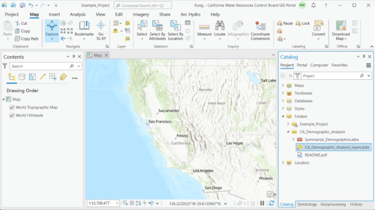
To view the layers in the layer package, drag and drop ‘CA_Demographic_Analysis_layers.lpkx’ onto the map. Also, click on the triangle next to the ‘Summarize_Demographics’ toolbox to show the ‘Summarize Demographics’ tool underneath.
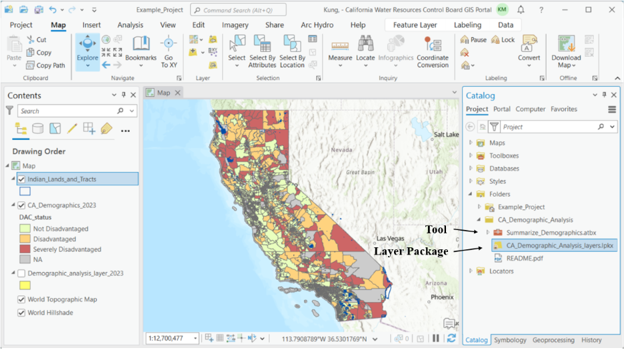
For this example, we’re using critically overdrafted basins as defined by the Sustainable Groundwater Management Act (SGMA). The basins layer is available on the Water Boards’ GIS Portal. In the Catalog pane, click on Portal, then search for ‘Critically Overdrafted Basins’. Add the layer to the map by dragging and dropping the layer onto the map, or by right-clicking and selecting ‘Add To Current Map’.
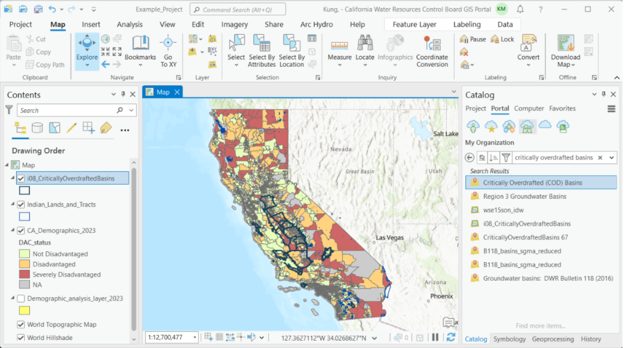
NoteNote: analysis boundaries that are bigger than at least several block groups are most appropriate for use with this tool. Boundaries that are smaller will lead to highly uncertain estimates.
Also, the tool can take some time to process depending on the number of polygons in your boundary file, as well as how big the polygons are. A suggested maximum number of polygons in your analysis boundary file would be 150.
If your analysis boundary is a shapefile (.shp), it needs to be changed into a geodatabase (.gdb) file. To identify the type of file, you can hover your cursor over the file in the Catalog pane to view a pop-up window with file information. Next to ‘Type’ it will say if the file is a ‘Shapefile’ or ‘File Geodatabase Feature Class’. If your analysis boundary is already a geodatabase file, skip to the next step. Otherwise:
Click on the Geoprocessing pane and search for ‘Export Features’. If you do not see the Geoprocessing pane, click on ‘Analysis’ in the top menu bar, then ‘Tools’.
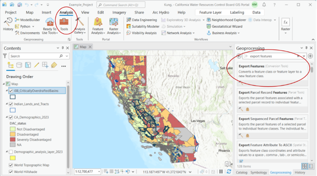
Open the ‘Export Features’ tool, and select the ‘io8_CriticallyOverdraftedBasins’ layer as the input feature. The Output Feature Class field will default to exporting to the project geodatabase and naming the file as ‘io8_CriticallyOverdraftedBasins_ExportFeatures’.
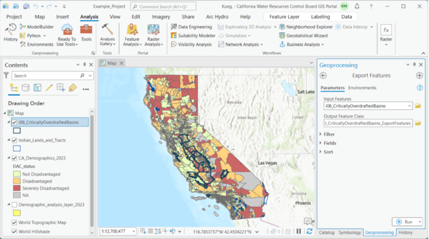
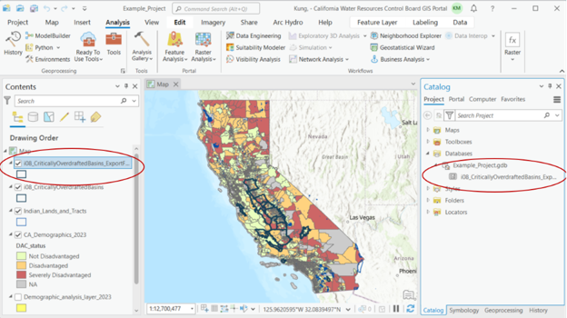
Click ‘Run’.
After exporting, you should see the new feature in the Contents pane and the Catalog pane under the project geodatabase.
Double-click on the Summarize Demographics tool. Fill in the parameter fields, described in pop-up fields if you hover over the red asterisk. Parameters are also described in the following ‘Tool Parameters’ section. For ‘Analysis ID’, choose the field you would like to see exported in the summary output file. This field must be text and unique (i.e., each ID value can only appear once; to view the attribute table of your analysis boundary layer, right-click on the layer in the Contents pane and right-click ‘Attribute Table’.) For this example, we’ll use the ‘Basin_Subbasin_Name’ field. Click ‘Run’.
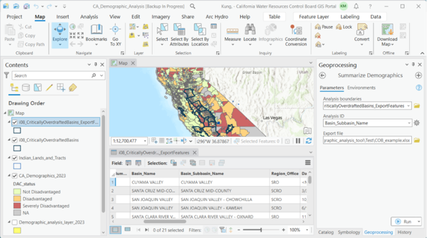
When the tool is finished running, an Excel report of summary demographic statistics will be exported to the folder you specified.
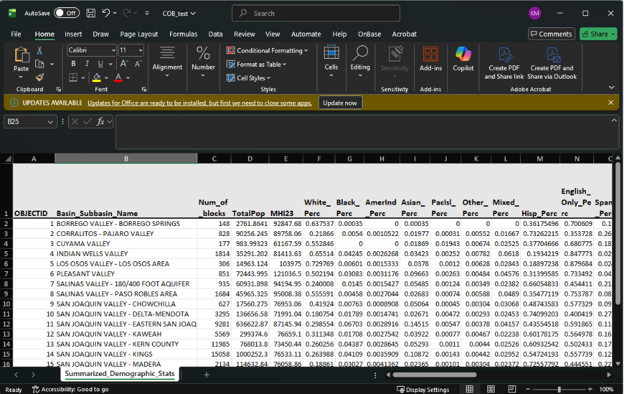
Using the Tool’s Output
We can use the results in this example to help answer some potential questions we may have about equity. Are there certain groups in critically overdrafted basins that are disproportionately affected? Which ones? In order to answer these questions, we need to compare our results to demographic statistics that summarize a comparison group. In this case, because critically overdrafted basins span much of the state, demographic statistics for the overall state of California would be appropriate. According to Census ACS 5-year 2019-2023 data, statistics for the overall state are:
| Statistic Description | Amount |
|---|---|
| Median household income | $96,334 |
| White percentage | 34.5% |
| Black percentage | 5.3% |
| American Indian percentage | 0.2% |
| Asian percentage | 15.1% |
| Pacific Islander percentage | 0.3% |
| Other percentage | 0.5% |
| Mixed race percentage | 4.1% |
| Hispanic percentage | 39.8% |
Let’s say we’re curious if certain racial groups in critically overdrafted basins are overrepresented, and how many would be considered Disadvantaged Communities. With the results table from the Summarize Demographics Tool, we can do a simple analysis using conditional formatting in Excel to highlight values in the race percentage columns that are greater than the average values for the state of California.
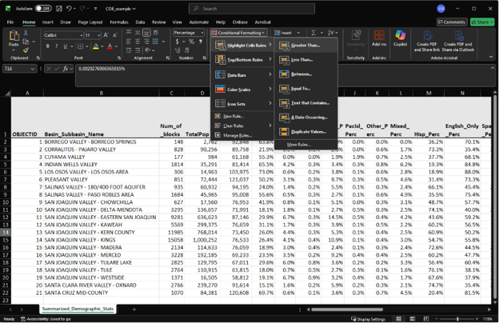
So for ‘White_Perc’, we would highlight cells greater than 34.5%, then for ‘Black_Perc’, we would highlight cells greater than 5.3%, and so on. As for looking at how many basins would be considered Disadvantaged Communities, based on the definition of Disadvantaged Communities having less than 80% of the overall state median household income, we would highlight cells under ‘MHI23’ that are less than $77,062. After conditionally highlighting these cells, we get:
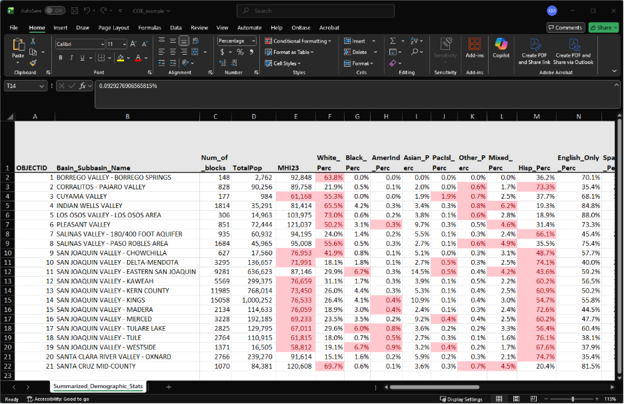
We can visually see that the majority of basins have Hispanic percentages that are higher than the state average. We can also see that roughly half of basins have incomes that would qualify them as Disadvantaged Communities. Furthermore, the vast majority of basins with above average Hispanic populations are also Disadvantaged Communities. While there are other implications that can be found by further analyzing this data, this example analysis shows that prioritizing critically overdrafted basins benefits both the aquifers that are the most overdrafted as well as marginalized communities.
Using the Tool for Language Outreach
The Summarize Demographics tool is also a useful first step in determining which languages to translate documents to. As described in the Water Board’s Language AccessProtocol, there are two thresholds that staff may refer to when determining languages for translation. The tool calculates both thresholds across user-specified boundaries.
Threshold #1 - Site Cleanup Cases
This threshold is recommended for site cleanup cases as per California Water Code, Section 13307.5(a).
Of the total population in the area of interest, if the percentage of limited English proficiency (LEP) speakers of a particular language is greater or equal to 5%, then vital documents must be translated to that language. This calculation can be expressed as:
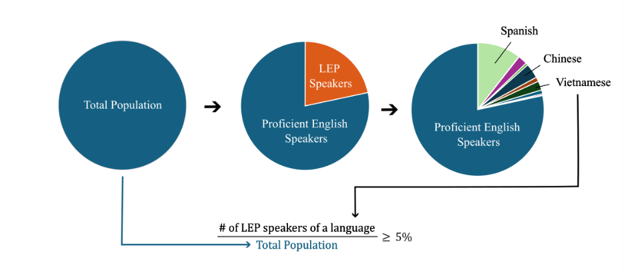
This language percentage calculation is performed by the GIS Summarize Demographics Tool across user-specified boundaries, and variables in the tool output are named by the language and the suffix ‘_Perc’, e.g. ‘Spanish_Perc’, ‘Chinese_Perc’, etc.
Threshold #2 - All Other Cases
This threshold is recommended for all other cases besides site cleanup.
Of the total limited English proficiency (LEP) population in the area of interest, if the percentage of LEP speakers of a particular language is greater or equal to 5%, then vital documents must be translated to that language. This calculation can be expressed as:
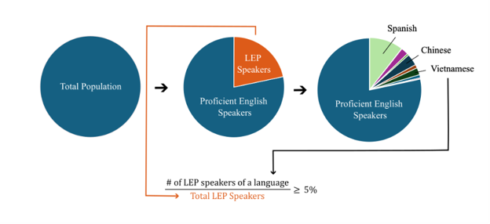
This language percentage calculation is performed by the GIS Summarize Demographics Tool, and variables in the tool output are named with the prefix ‘LEP’, followed by the language, then the suffix ‘_Perc’, e.g. ‘LEP_Spanish_Perc’, ‘LEP_Chinese_Perc’, etc.
Coming back to our Critically Overdrafted Basins example, we are not looking at a site cleanup case, so we want to look at variables with the second threshold calculation, i.e. the language variables that start with ‘LEP’. Using conditional formatting, highlight the LEP language columns where values are greater than or equal to 5%.
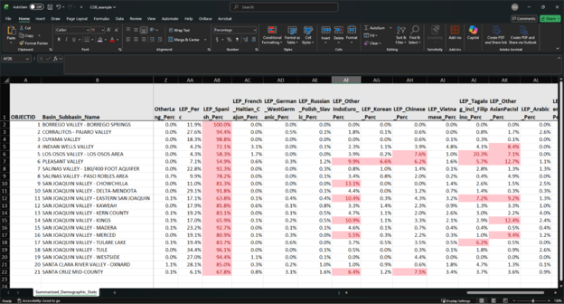
We can see that Spanish is greater than the threshold in all critically overdrafted basins. In addition, some basins have language columns with values that exceed the threshold – Other Indo-European, Korean, Chinese, Tagalog including Filipino, and Other Asian or Pacific Islander. Unfortunately, with the exception of Korean, these are language categories with multiple written or spoken languages or dialects. In this case, staff need to consult with local community groups to determine exactly which languages or dialects would be appropriate for translation.
Furthermore, if certain limited-English-proficiency communities demonstrate concern over a Water Board policy or project but the data does NOT show that they exceed the 5% threshold, it is recommended that staff translate documents to the languages of those communities.
In real life, OSGM staff did just that. Staff had examined the existing language data and determined that only Spanish translation was needed. However, Punjabi growers in the Central Valley were upset at the Water Boards for not providing translations for them as well. Afterwards, staff made sure to provide Punjabi translation and interpretation for them, in addition to hosting a Punjabi workshop, which helped repair the Water Board’s relationship with this community. It is notable that in the basins where the Punjabi community expressed a need for translation – Kaweah, Kern, and Tule Basins – the output from the Summarize Demographics Tool shows ‘LEP_OtherIndoEuro_Perc’ as less than 5%. This emphasizes that using this tool is only a starting point. It is crucial that staff engage with local groups in deciding which languages are necessary for translation and interpretation.
After this experience, OSGM staff plan on doing more outreach to government and NGO entities who more personally know the groups that are affected by SGMA, such as farmworkers and growers, to better understand the linguistic needs of those particular sub-populations. For example, when developing community profiles for future basins, they plan on reaching out to contacts at the California Department of Food and Agriculture, Community Alliance for Family Farmers, and UC Agriculture and Natural Resources Small Farms Network.
US EPA’s EJScreen
U.S. EPA’s EJScreen version 2.3 is a user-friendly tool for when you want quick snapshots of geographic areas. Although it was taken down from EPA’s website in February 2025, a reconstruction is available through the work of the Public Environmental Data Partners.
| Tool Pros | Tool Cons |
|---|---|
Good for comparing a few discrete areas. Generates reports with a lot of other information that could be helpful in assessing other environmental burdens that communities already face. Generates visually pleasing reports. Does not require technical ArcGIS skills. |
Cannot upload your own boundaries, but you can draw your own boundaries in the tool. Analyzing many sites would be time-consuming. Data is from 2022 and will likely not be updated in the near future. |
Tool Walk Through
In the stepwise walk through below, we will see how to compare the demographics of the population within two miles of the former Exide battery recycling plant to the demographics of Los Angeles County, where the site is located.
In EJScreen, you can enter the address of the site, 2717 South Indiana St., Vernon, CA to find the location on the map.
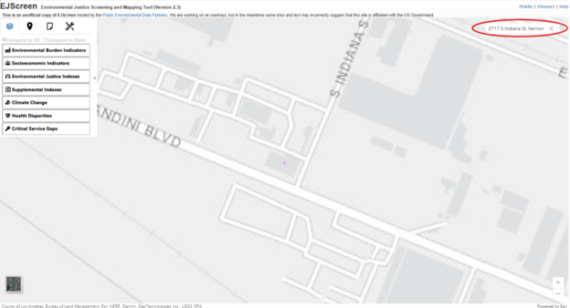
Click on the Reports tab, drop a pin on the site, and enter a buffer distance of two miles. Enter a name for the report, ‘Exide’ in this case.
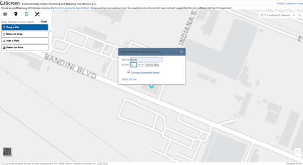
Click ‘Add to Map’. Scroll out to view the buffer area.
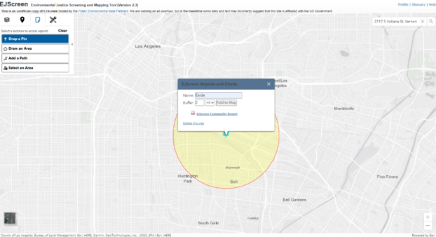
Click ‘EJScreen Community Report’ to generate a report in a new browser tab. The report shows the area and population of the user-specified area in the header, and the main body shows statistics on environmental burdens and socioeconomics.
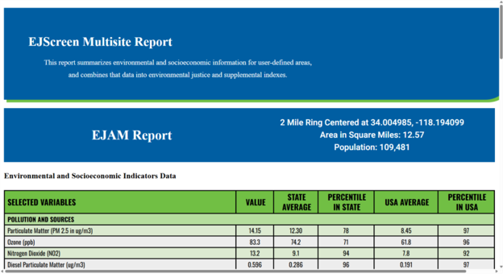
At the bottom of the report are breakdowns by race, gender, and languages spoken among limited English speakers.
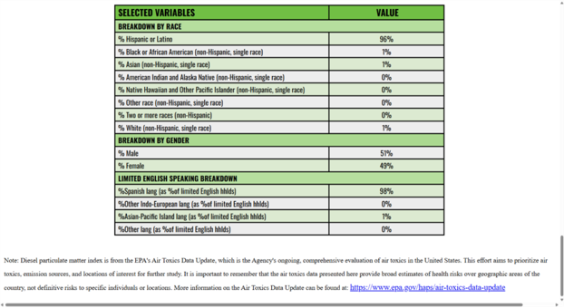
Now let’s generate reports for the population of Los Angeles County, our comparison group. Click Clear in the Reports tab and then click ‘Select an Area.’ Click ‘Select County’ and click anywhere within Los Angeles County. This will highlight the county green.

Scroll out to view the selected boundary and the pop-up window to generate reports. Repeat Step 4 to generate an EJScreen Community Report for Los Angeles County.
Below are reports for the area around Exide (left) and Los Angeles County (right). When comparing the reports, we can see that Exide area is 96% Hispanic, compared to 49% for the county, which indicates that residents near Exide are disproportionately Hispanic.
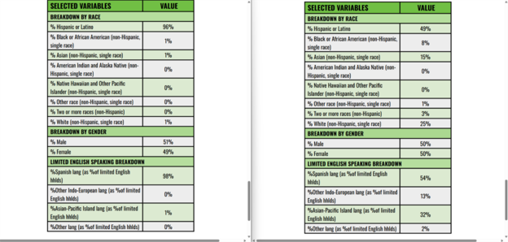
Additional Resources
- College of Water Informatics Machine Learning Handbook
- Flood M. D., Lemieux V. L., Varga M., and Wong B. L. W. (2016) ‘The application of visual analytics to financial stability monitoring’, Journal of Financial Stability
- DataCamp (2023) The Data-Information-Knowledge-Wisdom Pyramid